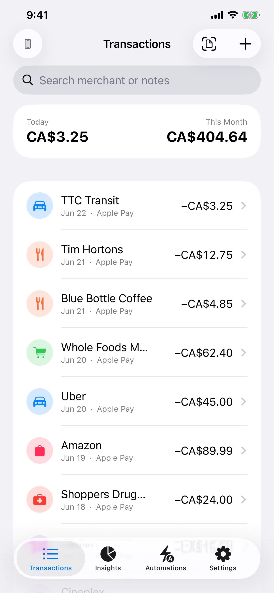
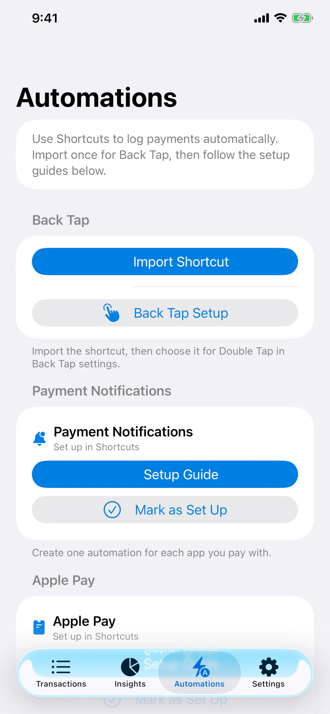
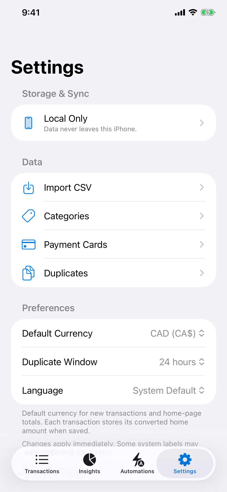

Start with the payment record you already have.
Users can choose an image of a receipt or a payment screen from a bank app, Apple Pay, WeChat, or Alipay instead of retyping every field.
Independent iOS product · Released July 7, 2026
PocketPilot turns payment screenshots and receipts into organized transactions and useful spending insights. I took the product from idea to App Store release as a solo developer, building the experience in Swift and SwiftUI.


Product flow
Every step is designed to reduce bookkeeping friction while keeping the user in charge of where transaction data lives.
Users can choose an image of a receipt or a payment screen from a bank app, Apple Pay, WeChat, or Alipay instead of retyping every field.
On-device OCR extracts useful text for review. The workflow is built to assist entry, not hide it, so the resulting transaction remains visible to the user.
PocketPilot supports local-only use, iCloud sync, or a self-hosted Raspberry Pi endpoint. There is no developer-operated transaction cloud.
Search, monthly totals, currency conversion, category breakdowns, and duplicate controls make a growing transaction history easier to use.
On-device capture
The scan experience communicates exactly what will happen before an image is selected: the user chooses the source and PocketPilot reads its text on the iPhone.


Data control
Rather than making one storage model fit every user, PocketPilot exposes three clear paths: keep data on the iPhone, sync through the user’s Apple account, or connect a self-hosted server over Tailscale.
The developer does not operate a transaction-data cloud for the app. That boundary keeps the privacy story specific and verifiable.
Complete utility
The product closes the loop with automation, organization, and views that help users make sense of recurring activity.

